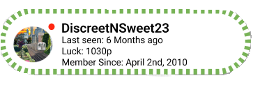

“Be honest.. Did you get anything out of this mentorship so far?”
I’m reaching out because I’ve been seriously considering premium mentorship with 5chan and have just started mentorship about 2 months ago, but I’m also feeling a bit hesitant about it. To be honest, I’m the type of person who likes to see quick changes, and I’m not sure if I’m ready to commit to something that might take time to show results, especially when this whole thing is held online! Tell me your guys storys with self improvement with your time with 5chan please.
“socializing without social media as a teen”
A year ago, I made the decision to uninstall both TikTok and Instagram, I used to be obsessed with scrolling through those apps, checking out posts, and trying to keep up with trends so I could have something to talk about with my peers my age . But I realized it was having a really negative impact on my mindset and how I saw the world.
The first thing i noticed was.. I was bored. I didn’t have the same access to talk to my friends and share posts and videos. These friends later would disappear into the shadows of my life and Im now alone. Seeing how they would just grow closer over hating on certain types of content or trends- stepping away from my phone and them has shown me how shallow majority of teen relationship and friendships are. This as a way to laugh or bond with people didn’t leave a good taste in my mouth. Ive spent the majority of this year alone in my own thoughts and tasks as well as still being in this community and I think im ready to make an effort to find others who share my same values and hobbies. Recently ive been working with Admin872823 and its helped me see the more optimistic approach to being alone but also realizing that there are others like me who stay off these..
“I became a better business owner being off
of social media"

For the longest time, I relied heavily on social media marketing to find clients. But I wasn’t getting the results I was hoping for, and I felt like I was just another voice in a crowded digital space. A few months ago, I decided to shift my approach and start meeting potential clients in person and doing my own research. I attended networking events, visited local businesses, and reached out directly to people who might need my services. Honestly, the difference has been incredible. Not only am I making more sales, but I also feel like the relationships are way more genuine. There's something about face-to-face interaction that...